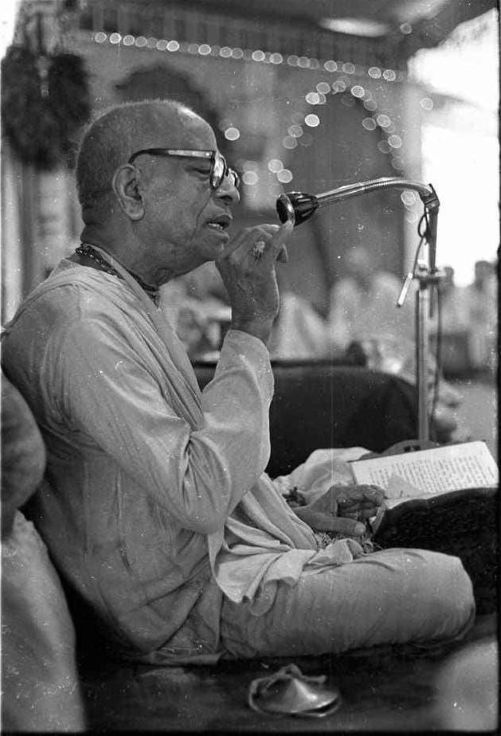

Lazy to read and Speak Philosophy?

One should be particularly careful to understand the truth about Kṛṣṇa. If because of laziness one does not come to know Kṛṣṇa one will be misguided about the cult of devotion, like those whoconclusively, and imitate the transcendental symptoms sometimes observed in liberated souls. Although the use of thoughts and arguments is a most suitable process for inducing an uninitiated person to become a devotee, neophytes in devotional service must always alertly understand Kṛṣṇa through the vision of the revealed scriptures, the bona fide devotees and the spiritual master. Unless one hears about Śrī Kṛṣṇa from such authorities, one cannot make advancement in devotion to Śrī Kṛṣṇa. The revealed scriptures mention nine means of attaining devotional service, of which the first and foremost is hearing from authority. The seed of devotion cannot sprout unless watered by the process of hearing and chanting. One should submissively receive the transcendental messages from spiritually advanced sources and chant the very same messages for one’s own benefit as well as the benefit of one’s audience.
~ Purport, Chaitanya Charitamrta Ādi 2.117